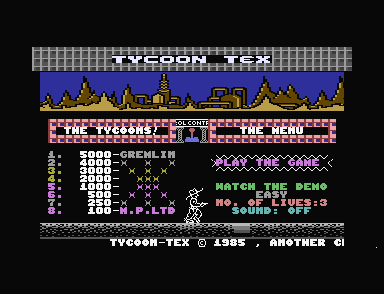
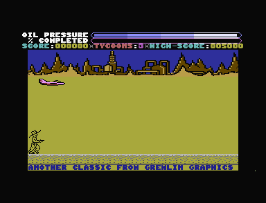

<meta charset="utf-8">
<meta name="viewport" content="width=device-width, initial-scale=1">
<title>Tycoon Tex</title>
<link rel="preconnect" href="https://fonts.googleapis.com">
<link rel="stylesheet" href="https://fonts.googleapis.com/css2?family=Lato:wght@400;700;900&family=IBM+Plex+Mono:wght@400;500&display=swap">
<style>
:root{
  --bg:#23262d; --paper:#e9e7e1; --surface:#ffffff; --surface-2:#f1efea; --line:#d5d3cc; --line-soft:#e0ded8;
  --ink:#2f3136; --ink-soft:#55585f; --ink-mute:#80838a;
  --link:#1f5fa8; --link-hover:#154480; --accent:#1f5fa8;
  --amber:#c25a00; --cyan:#1f5fa8; --coral:#d04a3a; --green:#2a8a4a; --violet:#4a5bd6; --hl:#fff0c2;
  --chip:#2f3136; --chip-ink:#ffffff;
  --c64blue:#40318d; --c64grey:#686868;
  --fd:'Lato',system-ui,sans-serif; --fb:'Lato',system-ui,sans-serif; --fm:'IBM Plex Mono',ui-monospace,Menlo,monospace;
  --col:1080px; --gx:68px; --fs:17px; --lh:1.6; --hw:900; --h1:46px; --h2:26px; --sy:48px; --pp:26px; --r:10px;
  --plate-shadow:0 1px 2px rgba(0,0,0,.05),0 4px 14px rgba(0,0,0,.05);
}
*{box-sizing:border-box}
html{background:var(--bg);min-height:100%}
body{background:var(--paper);color:var(--ink);font-family:var(--fb);font-size:var(--fs);line-height:var(--lh);max-width:var(--col);margin:0 auto;min-height:100vh;padding:0 0 4rem}
h1,h2,h3{font-weight:var(--hw);letter-spacing:-.01em;text-wrap:balance;color:var(--ink);margin:0}
.wrap{padding:0 var(--gx)}
.hero{padding:48px var(--gx) 8px;text-align:left}
.eyebrow{font-family:var(--fm);font-size:12px;letter-spacing:.08em;text-transform:uppercase;color:var(--ink-mute);margin:0 0 10px}
.hero h1{font-size:var(--h1);line-height:1.15;letter-spacing:-.02em;margin:0 0 14px}
.hero .sub{margin:0 0 .6em;color:var(--ink-soft)}
section{padding:var(--sy) 0 24px}
section:last-of-type{border-bottom:none}
.fig{font-family:var(--fm);font-size:12px;letter-spacing:.08em;text-transform:uppercase;color:var(--ink-mute);margin:0 0 10px}
h2.t{font-size:var(--h2);margin-bottom:12px}
.lede{color:var(--ink-soft);margin:0 0 30px}
.plate{background:var(--surface);border:1px solid var(--line);border-radius:var(--r);padding:var(--pp);box-shadow:var(--plate-shadow)}
.cap{font-size:14px;color:var(--ink-mute);margin-top:14px;line-height:1.55}
.cap b{color:var(--ink);font-weight:700}
code{font-family:var(--fm);font-size:.82em;background:var(--chip);color:var(--chip-ink);border-radius:4px;padding:2px 6px;white-space:nowrap}

.tt-pair{display:grid;grid-template-columns:1fr 1fr;gap:18px;align-items:start}
.tt-pair img{width:100%;display:block;border-radius:4px;image-rendering:pixelated;background:#000}
.tt-bar{display:flex;flex-wrap:wrap;gap:8px;align-items:center;margin:0 0 12px;font-size:14px}
.tt-bar>div{margin:0;min-width:190px}
.tt-bar button,.tt-pad button,.tt-table button{font:inherit;font-size:13px;padding:5px 11px;border:1px solid var(--line);background:var(--surface-2);color:var(--ink);border-radius:6px;cursor:pointer;touch-action:manipulation;user-select:none;white-space:nowrap}
.tt-bar button:hover,.tt-pad button:hover,.tt-table button:hover{border-color:var(--ink-mute)}
.tt-bar button.on,.tt-pad button.on{background:var(--ink);color:#fff;border-color:var(--ink)}
.tt-bar label{display:flex;gap:6px;align-items:center;color:var(--ink-soft)}
.tt-screen{width:100%;max-width:640px;display:block;image-rendering:pixelated;background:#000;margin:0 auto;border-radius:4px}
.tt-screen:focus{outline:2px solid var(--accent);outline-offset:2px}
.tt-wrapf{position:relative;max-width:640px;margin:0 auto}
.tt-band{position:absolute;left:0;right:0;border-top:2px dashed #ffd23f;pointer-events:none}
.tt-band span{position:absolute;right:4px;top:2px;font-family:var(--fm);font-size:11px;color:#ffd23f;background:rgba(0,0,0,.65);padding:0 4px;border-radius:3px}
.tt-pad{display:flex;flex-wrap:wrap;gap:6px;align-items:center;margin:12px 0 0;justify-content:center}
.tt-pad button{min-width:46px;font-size:15px}
.tt-state{font-family:var(--fm);font-size:13px;color:var(--ink-soft);margin:10px 0 0;min-height:1.5em}
.tt-small{display:flex;flex-wrap:wrap;gap:22px;align-items:flex-end}
.tt-small canvas{image-rendering:pixelated;background:#000;border-radius:4px;display:block}
.tt-small figure{margin:0;text-align:center;font-size:12.5px;color:var(--ink-soft)}
.tt-small figure.on canvas{outline:3px solid #ffd23f;outline-offset:2px}
.tt-table{border-collapse:collapse;font-size:14px;margin:10px 0;width:100%}
.tt-table th,.tt-table td{border-bottom:1px solid var(--line-soft);padding:4px 7px;text-align:right;vertical-align:top}
.tt-table th:first-child,.tt-table td:first-child{text-align:left}
.tt-table th{font-weight:700;color:var(--ink-soft);font-size:13px}
.tt-table tr.now td,.tt-table td.now{background:var(--hl)}
.tt-table.tt-left th,.tt-table.tt-left td{text-align:left}
.tt-scroll{overflow-x:auto}
.tt-strip{display:block;image-rendering:pixelated;background:#000;border-radius:3px;max-width:100%}
.tt-pieces{display:flex;flex-wrap:wrap;gap:16px;align-items:flex-end;margin:4px 0 12px}
.tt-pieces figure{margin:0;font-size:12px;color:var(--ink-soft);text-align:center}
.tt-need{font-size:14px;color:var(--coral)}
.tt-source{margin:14px 0 0;padding:10px 16px;background:var(--surface);border:1px solid var(--line);border-left:3px solid var(--amber);border-radius:0 var(--r) var(--r) 0;font-size:15.5px;color:var(--ink-soft)}
.tt-source b{color:var(--ink)}
@media (max-width:720px){:root{--gx:18px;--h1:36px;--pp:16px}.tt-pair{grid-template-columns:1fr}}
</style>
<!-- tabs -->
<header class="hero">
  <p class="eyebrow">1985 · Gremlin Graphics</p>
  <h1>Tycoon Tex</h1>
  <p class="sub">Tex runs along his own oil pipeline, jumping the breaks and shooting what comes at him. Where he stands on the screen sets how fast the world goes by, in two layers at two speeds, and he has to run: at the slowest speed no break can be jumped.</p>
  <p class="tt-source"><b>Unusually, the authors’ own source survives.</b> What it shows of how Tycoon Tex was made, from a cheat taken out to extra lives made ten times rarer on the way to the tape, is on the <a href="source.html#original-source">Source code</a> tab.</p>
</header>
<main class="wrap">

<section id="game">
  <p class="fig">01 · The game</p>
  <h2 class="t">Lay the pipeline before the oil pressure runs out</h2>
  <p class="lede">A cassette for the 16 KB Commodore 16, published by Gremlin Graphics in 1985, programmed by Anthony J. Clarke of Micro Projects with graphics by Matthew Clarke.</p>
  <div class="tt-pair">
    
    
  </div>
  <p class="cap">The menu and the start of level 1, in plus4emu. On the right Tex stands on his pipeline at the bottom of the desert, a jet crosses the sky, and the two bars across the top are OIL PRESSURE and % COMPLETED.</p>
  <p>Tex is an oil tycoon walking along his pipeline. The pipe runs across the bottom of the screen and comes in from the right as he moves, faster the further right he stands. Some stretches of it are broken, and a break must be jumped: Tex falls into one and loses a life. A jet drops bombs on him, and arrows, bouncing bombs and crash explosives come at him; his sixgun scores points off all but the jet.</p>
  <p>The % COMPLETED bar fills as he runs and as he scores, and a full bar ends the level. The OIL PRESSURE bar above it drains all the while, faster on the harder settings, and when it empties the game is over however many lives are left. The scene changes with every level, the desert, the ice and a grey surface pipe in turn, and the enemies grow in number and come back sooner.</p>
</section>

<section id="run">
  <p class="fig">02 · Running</p>
  <h2 class="t">Where Tex stands sets the speed</h2>
  <p class="lede">The play screen, running on the game's own code. Move Tex with the arrow keys or the buttons: the further right he stands, the faster the pipe and the skyline go by. Up jumps, and the space bar fires.</p>
  <div class="plate">
    <div class="tt-bar">
      <div class="pick"><a class="step" id="tt-rprev" aria-label="Previous scene">‹</a><select id="tt-rscene" aria-label="Scene"></select><a class="step" id="tt-rnext" aria-label="Next scene">›</a></div>
      <button type="button" id="tt-rrun" class="on">Pause</button>
      <button type="button" id="tt-rnew">Start again</button>
    </div>
    <canvas id="tt-run" class="tt-screen" width="640" height="400" tabindex="0" aria-label="The play screen. Use the left and right arrow keys to move Tex, up to jump and the space bar to fire."></canvas>
    <div class="tt-pad" id="tt-pad">
      <button type="button" data-k="left" aria-label="Left">←</button><button type="button" data-k="up" aria-label="Jump">↑ jump</button><button type="button" data-k="right" aria-label="Right">→</button><button type="button" data-k="fire">Fire</button>
    </div>
    <p class="tt-state" id="tt-rstate"></p>
    <div class="tt-scroll"><table class="tt-table" id="tt-speeds"></table></div>
    <p class="cap">The game's five raster interrupts (<code>irq_frame</code>, <code>irq_skyline</code>, <code>irq_field</code>, <code>irq_pipe</code> and <code>irq_scroller</code>), run once a frame in their order on the kit's 6502 over the listing, after <code>start</code> and <code>start_game</code> (<code>$29D3</code>) have built the level. The main loop is left out, so the pressure, the running points, the bouncy bomb and the crash explosive stand still, and no enemy is sent. Tex keeps his lives. Against the game in plus4emu, stopped at <code>irq_pipe</code> in each of 419 frames of level 2 with the joystick moved, jumping and firing, Tex, the scroll registers, his legs, the jump, the bullet and the message were the same in every frame, and again through a fall into a break and back.</p>
  </div>
  <p>Tex stands on columns 1 to 27 and moves one column every third frame. Eight of those columns set a speed when he reaches them: 1, 4, 7, 10, 13, 16, 19 and 22 (<code>set_speed</code>, <code>speed_columns</code>). Between them the speed stays where it was, so Tex walking back from column 22 keeps the top speed until he reaches 19. The speed picks a value from three tables: how many pixels the pipe moves each frame (<code>pipe_speeds</code>), how many the skyline moves (<code>skyline_speeds</code>), and how many frames pass between pictures of his running legs (<code>leg_delays</code>).</p>
  <p>The pipe goes up to 7 pixels a frame and the skyline only to 3, so the skyline seems further away. At speed 1 the skyline's single pixel comes every other frame, which <code>scroll_skyline</code> counts in <code>half_rate</code>. Each band has a fine scroll of its own in TED's register <code>$FF07</code>, set by its own interrupt, and when the fine scroll passes a whole character the band's rows move one cell left and a new column comes in at the right (<code>shift_skyline</code>, <code>shift_pipe</code>). The 38-column window hides the column being filled.</p>
  <p>Running also pays. While the speed is above 0 the main loop adds a point to the score and 0 to 4 eighths of a cell to % COMPLETED every 24 passes, more at the higher speeds (<code>main_loop</code>, <code>completed_rates</code>). Tex standing at column 1 completes nothing.</p>
</section>

<section id="sound">
  <p class="fig">03 · Sound</p>
  <h2 class="t">Sound: three effects and no music</h2>
  <p class="lede">SOUND is OFF on the menu as the game loads. Switched on, it plays the sixgun, a hit, and a falling tone while the pressure left at the end of a level is counted into the score.</p>
  <div class="plate">
    <div class="tt-scroll"><table class="tt-table tt-left" id="tt-sfx"><tr><th></th><th>Effect</th><th>What TED plays</th><th>Frames</th></tr>
      <tr data-k="0"><td></td><td>the sixgun</td><td>voice 1's square wave at full volume, its pitch falling from about 18,500 Hz to 739 Hz</td><td>20</td></tr>
      <tr data-k="1"><td></td><td>a hit</td><td>voice 2's noise at full volume, its pitch falling from about 7,900 Hz to 440 Hz</td><td>19</td></tr>
      <tr data-k="2"><td></td><td>the pressure counted</td><td>voice 2's square wave at volume 3, a step lower for each eighth of pressure counted, from about 2,260 Hz to 435 Hz for a full bar</td><td>about 246</td></tr></table></div>
    <div class="tt-bar"><label><input type="checkbox" id="tt-meant"> The sixgun with its falling high bits in voice 1's register, <code>$FF12</code></label></div>
    <div id="tt-sfxroll"></div>
    <p class="cap">Each effect is the game's own code from the listing on the kit's 6502: <code>shot_sound</code> or <code>hit_sound</code> once, then <code>tick_sounds</code> once a frame, as <code>irq_scroller</code> calls it; and for the count, <code>level_complete</code>'s loop from <code>$3916</code> with a full bar. Its writes to TED's sound registers play through the site's model of TED. Run so, the sixgun and the hit write what the game wrote in plus4emu, frame by frame, and the count writes the same 208 values. Each of its passes is played 42,290 cycles apart, the average in plus4emu, where they took 39,068 to 47,517 as the interrupts' work changed (<code>test_tex.js</code>).</p>
  </div>
  <p>TED, the chip that also draws the screen, has two voices: two square waves, or a square and noise. The game sets their pitch values and the volume straight into TED's registers, the sixgun when Tex fires (<code>fire_bullet</code>) and the hit when a bullet scores (<code>move_bullet</code>). Every routine returns at once while SOUND is off (<code>sound_on</code>).</p>
  <p><code>tick_shot_sound</code> lowers the sixgun's pitch value by 8 a frame, and when the low byte runs below zero it takes 1 from the high bits it keeps in <code>$DC</code>. It ORs those bits into <code>$FF10</code>, which is voice 2's, where voice 1's are in <code>$FF12</code>. So voice 1 keeps the high bits 3 that <code>shot_sound</code> gave it and the sweep stays in the top quarter of TED's range, values <code>$3F9</code> down to <code>$369</code>: it starts above what most ears hear and falls to 739 Hz. With the bits in <code>$FF12</code>, as the checkbox plays it, the value would drop to <code>$2F9</code> in the first frame and sweep from 423 Hz to 273 Hz. That version is a guess at what was meant, not the game's (<a href="discoveries.html#shot">Discoveries</a>).</p>
</section>

<section id="frame">
  <p class="fig">04 · One frame, rebuilt from memory</p>
  <h2 class="t">The screen is drawn in five bands</h2>
  <p class="lede">Five raster interrupts a frame each set TED up for one band of the screen, so one picture needs five sets of its registers.</p>
  <div class="plate">
    <div class="tt-bar">
      <label><input type="checkbox" id="tt-fbands" checked> Mark the bands</label>
      <label><input type="checkbox" id="tt-fone"> Draw with one set of registers</label>
    </div>
    <div class="tt-wrapf"><canvas id="tt-frame" class="tt-screen" width="640" height="400"></canvas><div id="tt-fmarks"></div></div>
    <p class="cap" id="tt-fcap">A frame of level 10, drawn from the screen memory (colours at <code>$0800</code>, characters at <code>$0C00</code>) and the character set as the game had them when <code>irq_pipe</code> began, with the registers each band's interrupt writes, by the site's TED renderer. Against plus4emu's own picture of the same frame, <b>0 of the 64,000 pixels</b> differ. Drawn with one set of registers, as the message band leaves them at the end of the frame, 20,797 differ.</p>
  </div>
  <div class="tt-scroll"><table class="tt-table tt-left" style="margin-top:22px">
    <tr><th>Interrupt</th><th>Raster line</th><th>Rows</th><th>Characters</th><th>Fine scroll</th></tr>
    <tr><td><code>irq_frame</code></td><td>204, below the last row</td><td>0 to 2, the bars and the score</td><td>128 at <code>$3C00</code>, 40 columns</td><td>none</td></tr>
    <tr><td><code>irq_skyline</code></td><td>23</td><td>3 to 7, the skyline</td><td>256 at <code>$1000</code>, 38 columns</td><td><code>$06</code></td></tr>
    <tr><td><code>irq_field</code></td><td>65</td><td>8 to 21, the play field</td><td>128 at <code>$3C00</code>, 38 columns</td><td>none</td></tr>
    <tr><td><code>irq_pipe</code></td><td>176</td><td>22 and 23, the pipeline</td><td>256 at <code>$1000</code>, 38 columns</td><td><code>$1B</code></td></tr>
    <tr><td><code>irq_scroller</code></td><td>192</td><td>24, the message</td><td>128 at <code>$3C00</code>, 38 columns</td><td><code>$1C</code></td></tr>
  </table></div>
  <p>The C16 has no sprites, so everything on the screen is a character. The bars, the score, the play field and the message use the game's main character set at <code>$3C00</code>, 128 multicolour characters holding the font, Tex, the bars and the enemies (<code>font</code> to <code>block_char</code>). The skyline and the pipe use a second set of 256 at <code>$1000</code>, room for five skyline pictures and the pipe's pieces (<code>skyline_chars</code>, <code>pipe_chars</code>). Each band sets its own background and two shared colours, which the scene chooses (<code>set_scene_colours</code>, <code>scene_colours</code>), so the sky, the ground and the pipe each have colours of their own.</p>
  <p>The first line of the skyline is drawn half set up. <code>irq_skyline</code> changes the character set and the scroll first and the colours after, and the beam draws that line in between: the skyline's characters in the colours of the bars. The rebuilt frame draws it so, as plus4emu does.</p>
</section>

<section id="tex">
  <p class="fig">05 · Tex</p>
  <h2 class="t">Tex is fifteen characters</h2>
  <p class="lede">Tex is three characters across and five down, drawn into the play field like the letters of the score. His legs are the bottom two rows, redrawn as he runs.</p>
  <div class="plate">
    <div class="tt-bar" id="tt-tbar"><span style="color:var(--ink-soft)">Speed</span></div>
    <div class="tt-small" id="tt-legs"></div>
    <p class="tt-state" id="tt-tstate"></p>
    <p class="cap">Drawn from the listing's characters <code>$40</code>-<code>$4E</code> in the desert's colours, at four times their size. The pictures of his legs are put in by the game's <code>animate_legs</code> on the kit's 6502, every <code>leg_delays</code> frames at the speed chosen. Lying down is <code>turn_tex</code>, run once, drawn with <code>tex_lying_layout</code>.</p>
  </div>
  <p><code>draw_tex</code> puts characters <code>$40</code> to <code>$4E</code> on the screen at Tex's cell, row by row from <code>tex_layout</code>, and looks at the pipe under him on the way (<code>check_hole</code>). <code>animate_legs</code> copies one of four pictures from <code>leg_frames</code> over characters <code>$49</code> to <code>$4E</code>, his bottom two rows, in the order 1, 3, 0, 2 (<code>leg_frame_order</code>): every 22 frames at speed 1 and every frame at speed 7.</p>
  <p>When Tex dies, <code>tex_death</code> saves his characters at <code>$0400</code>, and <code>turn_tex</code> turns each of them a quarter turn: its eight rows become its eight columns. Both <code>draw_tex</code> and <code>erase_tex</code> are patched to read <code>tex_lying_layout</code>, five columns by three rows, so that he lies on his side. Then <code>sink_tex</code> slides his characters down a pixel every second frame, 23 times, while the pipe slows to a stop. His characters are put back, a life goes, and he starts again at column 1 on a new stretch of pipe.</p>
</section>

<section id="pipe">
  <p class="fig">06 · The pipeline</p>
  <h2 class="t">A break is one more piece of pipe</h2>
  <p class="lede">The pipe comes in at the right edge one column at a time, from pieces chosen at random. A break is a piece too, and the columns that kill are decided by the character under Tex's feet.</p>
  <div class="plate">
    <div class="tt-bar">
      <div class="pick"><a class="step" id="tt-pprev" aria-label="Previous scene">‹</a><select id="tt-pscene" aria-label="Scene"></select><a class="step" id="tt-pnext" aria-label="Next scene">›</a></div>
      <button type="button" id="tt-pbreak">Build a break</button>
      <label><input type="checkbox" id="tt-plate"> From level 4</label>
    </div>
    <div class="tt-pieces" id="tt-pieces"></div>
    <canvas id="tt-break" class="tt-strip" width="512" height="78" aria-label="A break in the pipe, with the columns that kill marked below it."></canvas>
    <p class="tt-state" id="tt-pstate"></p>
    <p class="cap">The pieces drawn from the listing, in the pipe band's colours for each scene (<code>scene0_pieces</code>, <code>scene1_pieces</code>, <code>common_pieces</code>). The break is made by the game's <code>build_break</code> on the kit's 6502 and laid as <code>feed_pipe</code> lays a piece, and each of its columns is tested with the game's <code>check_hole</code>, as <code>draw_tex</code> calls it with Tex's left column above: red below a column means Tex falls there.</p>
  </div>
  <p>A piece is a run of characters in <code>piece_buffer</code>, two to a column, and <code>feed_pipe</code> puts the next two into column 39 of rows 22 and 23 each time the pipe moves a whole character. The desert and the ice each have three pieces of their own; the surface pipe has only the four every scene shares, the plain pipe and three decorated pieces that come every 9th, 14th and 12th time their roll comes up (<code>next_pipe_piece</code>, <code>rare_limits</code>).</p>
  <p>Each time a piece is chosen while the first random byte has its top bit set, <code>break_timer</code> counts down, and the 18th such time makes a break instead: a left edge, one or two middles, each two columns picked at random from three, and a right edge (<code>build_break</code>). From level 4 a break can have three middles (<code>break_parts</code>). A bomb or a crash explosive that lands on the pipe breaks it too, six columns wide (<code>break_pipe</code>).</p>
  <p>Tex falls when the character of the pipe's top row under his left column is one of <code>$D9</code> to <code>$E9</code> (<code>check_hole</code>). That is every column of a break but its leftmost, and the right edge counts as gap too. Tex does not move across while he jumps: the pipe carries the break under him during the jump's 20 frames, so how far a jump takes him depends on his speed, which the <a href="discoveries.html#jump">Discoveries</a> tab follows to its end.</p>
</section>

<section id="pressure">
  <p class="fig">07 · Oil pressure</p>
  <h2 class="t">The pressure only ever falls</h2>
  <p class="lede">The inlay says the faster Tex runs, the quicker the pressure builds. Nothing in the code raises it during a level: it falls an eighth of a cell at a steady pace, faster on the harder settings, and when it runs out the game ends.</p>
  <div class="plate">
    <div class="tt-bar">
      <label>Pressure left <input type="range" id="tt-press" min="0" max="207" value="207" style="width:220px"></label>
      <button type="button" id="tt-lose">A bomb on the pipe: lose 4</button>
    </div>
    <canvas id="tt-bar" class="tt-strip" width="640" height="32" aria-label="The OIL PRESSURE bar."></canvas>
    <p class="tt-state" id="tt-pressstate"></p>
    <div class="tt-scroll"><table class="tt-table" id="tt-diff">
      <tr><th>Difficulty</th><th>Main loop's wait (<code>loop_paces</code>)</th><th>Frames a pass, standing</th><th>Passes an eighth (<code>drain_rates</code>)</th><th>A full bar lasts</th></tr>
    </table></div>
    <p class="cap">The bar drawn by the game's <code>draw_pressure_bar</code> on the kit's 6502 from the eighths left, and the loss taken by its <code>lose_pressure</code>. The frames a pass were measured in plus4emu: 408, 610 and 1,214 main-loop passes in 1,500 frames with Tex standing still.</p>
  </div>
  <p>The bar is 26 cells of eight eighths: <code>pressure_cells</code> whole cells, then a part cell whose eighths are in <code>pressure_fine</code>, drawn from <code>bar_fill_patterns</code>. A level starts it at 25 cells and 7 eighths, a full bar (<code>next_level</code>). The main loop takes an eighth every 24, 19 or 14 passes on EASY, HARD and IMPOSSIBLE, whether Tex moves or not (<code>main_loop</code>, <code>drain_rate</code>), and each pass waits in <code>delay</code> for 24, 16 or 8 times 256 turns of a loop. A bomb or a crash explosive that reaches the pipe takes 4 eighths, or 2 where the pipe is broken already (<code>break_pipe</code>).</p>
  <p>When the part cell holds fewer eighths than the loss, <code>lose_pressure</code> takes the whole cell and refills the part cell to 7, whatever was in it, so the loss is the part cell's eighths and one more. A bomb with 1 eighth in the part cell costs 2, and with 0 it costs 1. When the cells run out <code>main_loop</code> goes to <code>pressure_out</code>, which types BAD NEWS! OIL PRODUCTION HAS CEASED across the field and ends the game, however many lives Tex has left. At the end of a level the pressure left is counted into the score, a point for each eighth and one more (<code>level_complete</code>).</p>
</section>

<section id="enemies">
  <p class="fig">08 · The enemies</p>
  <h2 class="t">Three of the four enemies change with the scene</h2>
  <p class="lede">Every enemy is a few characters drawn into the play field. The arrow, the bouncing bomb and the crash explosive are redrawn for each scene; the jet and its bomb are the same everywhere.</p>
  <div class="plate">
    <div class="tt-scroll" id="tt-enemies"></div>
    <p class="cap">Each enemy's characters as <code>set_scene_graphics</code> copies them in at the start of a level in each scene, run on the kit's 6502, laid out by the game's own tables (<code>arrow_cells</code>, <code>jet_cells</code>, <code>bouncy_cells</code>, <code>explosive_cells</code>) in that scene's colours for the play field.</p>
  </div>
  <div class="tt-scroll"><table class="tt-table tt-left" style="margin-top:22px">
    <tr><th>Enemy</th><th>How it moves</th><th>Moved by</th><th>Points</th></tr>
    <tr><td>Arrow</td><td>right to left at Tex's height, a column a frame, from column 36</td><td><code>move_arrow_and_jet</code>, in the interrupt</td><td>25</td></tr>
    <tr><td>Jet</td><td>left to right across rows 8 and 9, a column every second frame, dropping a bomb</td><td><code>move_arrow_and_jet</code></td><td>out of reach</td></tr>
    <tr><td>Jet's bomb</td><td>falls 11 rows to the pipe, a row every second frame</td><td><code>move_jet_bomb</code></td><td>250</td></tr>
    <tr><td>Bouncing bomb</td><td>bounces in from the right, starting between rows 12 and 18</td><td><code>move_bouncy_bomb</code>, in the main loop</td><td>50</td></tr>
    <tr><td>Crash explosive</td><td>flies in and lands on the pipe, breaking it, starting between rows 10 and 17</td><td><code>move_explosive</code>, in the main loop</td><td>200</td></tr>
  </table></div>
  <p>The jet flies on rows 8 and 9, above the highest row Tex's sixgun reaches, row 14 at the top of a jump, so it cannot be shot (<code>fire_bullet</code>, <code>bullet_stop</code>). Its bomb can, for the most points in the game. The arrow and the jet are moved by the interrupt, once a frame, so they keep the same speed on every setting. The bouncing bomb and the crash explosive are moved by the main loop, a step a pass, so they come faster on HARD and IMPOSSIBLE, where the main loop waits less. Tex dies when any of his cells is drawn over an enemy's character (<code>draw_tex</code>).</p>
</section>

<section id="levels">
  <p class="fig">09 · Levels</p>
  <h2 class="t">A level chooses its enemies</h2>
  <p class="lede">Each level is a stretch of pipe in its scene. What changes from one to the next is which enemies come, how soon they come back, and how often their timers count.</p>
  <div class="plate">
    <div class="tt-scroll"><table class="tt-table tt-left" id="tt-ltable"></table></div>
    <p class="cap">Each row is the game's <code>next_level</code> (<code>$3A31</code>) run on the kit's 6502 for the first level of the group, through every entry of <code>enemy_pairs</code> or <code>enemy_triples</code> where it chooses at random. Every level is on the <a href="levels.html">Maps / levels</a> tab.</p>
  </div>
  <p>The delay is the least time an enemy stays away after it has gone, in frames for the arrow and the jet and in main-loop passes for the bombs (<code>enemy_delays</code>). It counts down only on frames when a random byte is at least the threshold, so <code>$B0</code> lets it count about one frame in three and 1 almost always. From level 7 the jet's bombs break the pipe as well as threatening Tex (bit 4 of <code>enemy_mask</code>, <code>end_jet_bomb</code>).</p>
  <p>The level is kept as two decimal digits, and <code>next_level</code> takes the delay from two bits of it, bits 5 and 6. That works up to 79. Level 80 is <code>$80</code> in decimal, those two bits clear, and levels 80 to 99 get the slow enemies of levels 1 to 19 again (<a href="discoveries.html#bcd">Discoveries</a>). After 99 comes 00 (<a href="discoveries.html#level00">Discoveries</a>). The difficulty on the menu changes only the main loop's wait and the drain (<code>loop_paces</code>, <code>drain_rates</code>).</p>
</section>

<section id="controls">
  <p class="fig">10 · Controls</p>
  <h2 class="t">A joystick in either port, or five keys</h2>
  <p class="lede">K and J on the menu choose the keyboard or the joystick, and the picture between the two boxes shows which. The game reads both through TED itself, never through the KERNAL.</p>
  <div class="plate">
    <div class="tt-pieces" id="tt-ctl"></div>
    <p class="cap">The control picture as the menu draws it, twelve cells from <code>control_chars</code>, <code>control_colours</code> and the font at <code>$3C00</code>, with <code>menu_keys</code> copying <code>keyboard_icon</code> or <code>joystick_icon</code> into its middle four. The authors' source calls the joystick a "kempston joystick", and beside it holds a drawing of Commodore's own joystick for the C16 and Plus/4, commented out: on the right, drawn into the same cells, it is the one picture here the game never shows (<a href="source.html#original-source">the authors' source</a>).</p>
  </div>
  <div class="plate" style="margin-top:18px">
    <table class="tt-table tt-left" style="max-width:560px"><tr><th>In play</th><th>Joystick</th><th>Keyboard</th></tr>
      <tr><td>Left, right</td><td>left, right</td><td>Z, X</td></tr>
      <tr><td>Jump</td><td>up</td><td>;</td></tr>
      <tr><td>Fire</td><td>fire</td><td>RETURN</td></tr>
      <tr><td>Pause, carry on</td><td colspan="2">SPACE, C=</td></tr>
      <tr><td>End the game</td><td colspan="2">ESC</td></tr></table>
    <p class="cap"><code>read_controls</code> (<code>$182D</code>), <code>read_keys</code> with <code>key_columns</code> and <code>key_rows</code>, and <code>check_play_keys</code>; all tested in plus4emu.</p>
  </div>
  <p><code>read_controls</code> reads port 2, and port 1 only when port 2 shows nothing, so a joystick in either port works. Fire is bit 7 of port 2's byte and bit 6 of port 1's, and the routine rewrites one of its own instructions before each read to suit (<code>controls_fire_shift</code>): an <code>LSR</code> for port 2, a <code>NOP</code> for port 1. The inlay names <code>/</code> for down, which the menu and the high-score table read; in play nothing tests down. The pause and the quit keys are in no manual.</p>
</section>

<section id="score">
  <p class="fig">11 · Score and lives</p>
  <h2 class="t">A life for every 10,000 points</h2>
  <p class="lede">The score lives on the screen itself, six digits at <code>$0C56</code>-<code>$0C5B</code>, and the lives come from watching one of them.</p>
  <div class="plate">
    <table class="tt-table" style="max-width:560px"><tr><th>For</th><th>Points</th></tr>
      <tr><td>an arrow</td><td>25</td></tr><tr><td>a bouncing bomb</td><td>50</td></tr><tr><td>a crash explosive</td><td>200</td></tr><tr><td>a jet's bomb</td><td>250</td></tr>
      <tr><td>running, every 24 main-loop passes at speed 1 or more</td><td>1</td></tr>
      <tr><td>the end of a level, for each eighth of pressure left</td><td>1, and 1 more</td></tr></table>
    <p class="cap"><code>move_bullet</code>, <code>main_loop</code> and <code>level_complete</code>; points are added in decimal by <code>add_score</code>.</p>
  </div>
  <p>Each time the score's ten-thousands digit changes, <code>add_score</code> gives Tex a life, up to nine: one at 10,000, 20,000 and so on, and one at 100,000 when the digit goes from 9 to 0. NO. OF LIVES on the menu goes from 1 to 6 and round, 3 as loaded. A death takes a life from the count and from the TYCOONS digit on the screen (<code>tex_death</code>).</p>
  <p>The authors’ own source reads the thousands digit there, a life every 1,000 points, and so does the program it built on their disk. The game was made harder after that program was finished (<a href="source.html#original-source">the authors’ source</a>).</p>
  <p>THE TYCOONS!, the table on the menu, holds eight scores of six digits with names of seven letters, 5,000 for GREMLIN down to 100 for M.P.LTD as loaded. A score must beat an entry to go in (<code>check_hiscore</code>), and a new entry pushes the ones below it down, losing a digit on the way when the score is big enough (<a href="discoveries.html#hiscore">Discoveries</a>).</p>
</section>

</main>
<footer style="margin:16px 0 0;padding:22px var(--gx) 0;border-top:1px solid #e0ded8;font-family:'IBM Plex Mono',ui-monospace,Menlo,monospace;font-size:12px;color:#80838a"><a href="https://github.com/gamesexplained/gamesexplained" style="color:#1f5fa8;text-decoration:none">GitHub</a> · <a href="https://discord.gg/3V9GWyRDWV" style="color:#1f5fa8;text-decoration:none">Discord</a><br>© Games Explained contributors. Write-ups, facts and symbol maps are available under <a href="https://creativecommons.org/licenses/by-sa/4.0/" style="color:#1f5fa8;text-decoration:none">CC BY-SA 4.0</a>; code under <a href="https://opensource.org/licenses/MIT" style="color:#1f5fa8;text-decoration:none">MIT</a></footer>
<script type="application/json" id="tex-frame">{"screen":"717171717171717171717171564646464646465656565656566666666666667676767676767676567171717171717171717171715444444444444454545454545464646464646474747474747474745453535353537157575757575741424242424242427144415353535353535353535371575757575757686868686868686868686868686868686868686868686868686868686868686868686868686868686868686868686868686868686868686868686868686868686868686868686868686868686868686868686868686868686868686868686868686868686868686868686868686868686868686868686868686868686868686868686868686868686868686868686868686868686868686868686868686868686868686868686868686868686868686868686868686868686868686868686868686868686868686878787878787878787878787878787878787878787878787878707070707070707070707070707001787878787878787878787878787878787878787878787878787070707070707070707070707070017070707070707070707070707070707070707070707070707070707070707070707070707070700170707070707070707070707070707070707070707070707070707070707070707070707070707001707070707070707070707070707070707070707070707070707070707070707070707070707070017070707070707070707070707070707070707070707070707070707070707070707070707070700170707070707070707070707070707070707070707070707070707070707070707070787878787001707070707070707070707070707070707070707070707070707070707070707070707878787878017070707070707070707070707070707070707070707070707070707070707070707070707878780170707070707070707070707070707070707070707070707070707070707070707070707078787801707070707070707070707070707070707070707070707070707070707070707070707070787870017078787878787878707070707078787878787878787878787878787878787878787878787878787870787878787878787070707070787878787878787878787878787878787878787878787878787878707070707070707070707070707070707070707070707070707070707070707070707070707070013939393939393939393939393939393939393939393939393939393939393939393939393939393939393939393939393939393939393939393939393939393939393939393939393939393939393939060606060606060606060606060606060606060606060606060606060606060606060606060606060f090c201012051313151205534f4f4f4f4f4f4f4f4f4f4f4f4f4f4f4f4f4f4f4f4f4f4f4f4f5054202520030f0d100c051405045356515151515151515151515151515151515151515151515151515413030f12053a3030303431342a1419030f0f0e133a332a080907082d13030f12053a30303530303054595e63686d72772c31363b40454a4fa4a9aeb3b8bdc2c704090e13181d222754595e63686d727753585d62676c71762b30353a3f44494ea3a8adb2b7bcc1c603080d12171c212653585d62676c717652575c61666b70752a2f34393e43484da2a7acb1b6bbc0c502070c11161b202552575c61666b707551565b60656a6f74292e33383d42474ca1a6abb0b5babfc401060b10151a1f2451565b60656a6f7450555a5f64696e73282d32373c41464ba0a5aaafb4b9bec300050a0f14191e2350555a5f64696e7320202020202020202020202020202020202020206364656667202020202020202020202020202020202020202020202020202020202020202020202068696a6b6c20202020202020202020202020202020202020202020202020202020202020202020202020202020202020202020202020202020202020202020202020202020202020202020202020202020202020202020202020202020202020202020202020202020202020202020202020202020202020202020202020202020202020202020202020202020202020202020202020202020202020202020202020202020202020202020202020202020202020202020202020202020202020202020202020202020202020202020202020202020207576772020202020202020202020202020202020202020202020202020202020202020202020202078797a2020202020202020202020202020202020202020202020202020202020202020202020202020206d6e20202020202020202020202040414220202020202020202020202020202020202020202020206f702020202020202020202020204344452020202020202020202020202020202020202020202020717220202020202020202020202046474820202020202020202020202020202020202020202020202020202020202020202020202020494a4b202020202020202020202020202020202020202020202020202020202020202020202020204c4d4e202020202020202020202020202020202020202020202020202020edebedf3f3f3f3f3ebedeff1f3ebedebedebedf3ebedebedf3f3f3ebedebedf3f3ebedeff1f3c9cbeceaecf2f2f2f2f2eaeceef0f2eaeceaeceaecf2eaeceaecf2f2f2eaeceaecf2f2eaeceef0f2c8ca20151315010c201408010e0b1320140f200d0114140805172c0a01130f0e2c0d01120b2c09010e20","chars":{"2A":"0000241818240000","3C":"ff00324a4a3300ff","3D":"ff000c11118c00ff","3E":"ff00c92d2bc900ff","3F":"ff007625262500ff","50":"ff00fefefefe00ff","56":"ff008080808000ff","58":"6a6a6a6a556f6f6f","59":"1800000000814224","5A":"2442810000000018","5B":"0804018080010204","5C":"1020800101804020","5D":"000000000003030d","5E":"0000000000f0707f","5F":"03030f0f3f3bfbeb","60":"0d3ffaffff000000","61":"7ffaaffbfeff0000","62":"efbfffffabff0000","6D":"c3333fffe7e7ebeb","6E":"c3ccfcffdbdbebeb","6F":"ffd7f5ff3f030303","70":"ffd75ffffcc0ffeb","71":"ffebff03ffebff0f","72":"ffc0ffebffc0f0f0","75":"000000030f3bdedf","76":"0030f073ffb5e5f7","77":"030ffbabff575ffb","78":"de3b0f0300000000","79":"e5b5ff73f0300000","7A":"5f57ffabfb0f0300"},"zp":{"06":7,"1B":3,"1C":7,"75":22,"76":87,"94":34,"95":100,"96":87,"97":89,"98":41,"9A":65,"9B":97},"star":"0000241818240000"}</script>
<script src="../../lib/c16.js"></script>
<script src="../../lib/cpu6502.js"></script>
<script src="reference/tex.js"></script>
<script src="../../lib/ted-sound.js"></script>
<script>
(function () {
  const $ = id => document.getElementById(id);
  if (!window.C16 || !window.C64Cpu || !window.Tex || !window.TEDSound) {
    for (const id of ['tt-run', 'tt-frame', 'tt-legs', 'tt-break', 'tt-bar', 'tt-enemies', 'tt-ltable', 'tt-sfxroll', 'tt-ctl']) {
      const el = $(id); if (!el) continue;
      const p = document.createElement('p'); p.className = 'tt-need';
      p.textContent = 'This needs the site\'s scripts (lib/c16.js, lib/cpu6502.js, lib/ted-sound.js): open the page from the built site.';
      el.replaceWith(p);
    }
    return;
  }
  const hex = (n, w = 2) => '$' + n.toString(16).toUpperCase().padStart(w, '0');
  const SCENES = ['the desert', 'the ice', 'the surface pipe'];
  function pick(prev, sel, next, n, label, on) {
    for (let i = 0; i < n; i++) { const o = document.createElement('option'); o.value = i; o.textContent = label(i); sel.appendChild(o); }
    const go = i => { i = Math.max(0, Math.min(n - 1, i)); sel.value = i; prev.classList.toggle('off', i === 0); next.classList.toggle('off', i === n - 1); on(i); };
    prev.onclick = () => go(+sel.value - 1); next.onclick = () => go(+sel.value + 1); sel.onchange = () => go(+sel.value);
    return go;
  }
  const crop = (pic, x, y, w, h) => {
    const px = new Uint8Array(w * h);
    for (let j = 0; j < h; j++) px.set(pic.px.subarray((y + j) * pic.w + x, (y + j) * pic.w + x + w), j * w);
    return { w, h, px };
  };
  // TED for a widget's drawing: 40 columns, no scroll, the row at the window's top; the play field's
  // character set and colours, or the pipe's, as the scene's variables in m hold them
  const FIELD = m => ({ 0x06: 0x1B, 0x07: 0x18, 0x12: 0xC0, 0x13: 0x3C, 0x14: 0x08, 0x15: m[0x96], 0x16: m[0x94], 0x17: m[0x95], 0x19: 0 });
  const PIPE = m => ({ 0x06: 0x1B, 0x07: 0x98, 0x12: 0xC0, 0x13: 0x10, 0x14: 0x08, 0x15: m[0x76], 0x16: m[0x9A], 0x17: m[0x9B], 0x19: 0 });
  const TOP = { 0x06: 0x1B, 0x07: 0x18, 0x12: 0xC0, 0x13: 0x3C, 0x14: 0x08, 0x15: 0x70, 0x16: 0x51, 0x17: 0x31, 0x19: 0x70 };
  // w by h cells drawn from a copy of m with put(col, row) giving [character, colour] at the top left
  function cells(m, ted, w, h, put) {
    const s = m.slice();
    s.fill(0x20, 0x0C00, 0x0FE8); s.fill(0, 0x0800, 0x0BE8);
    for (let r = 0; r < h; r++) for (let c = 0; c < w; c++) {
      const v = put(c, r);
      if (v) { s[0x0C00 + r * 40 + c] = v[0]; s[0x0800 + r * 40 + c] = v[1]; }
    }
    return crop(C16.render(s, ted, { size: 0x4000 }), 0, 0, w * 8, h * 8);
  }

  C16.load('listing.json').then(L => {
    const base = Tex.fresh(L);
    const levelStart = k => Tex.startLevel(base.slice(), k);
    const scenes = [1, 2, 3].map(levelStart);

    /* Running */
    (function () {
      const cv = $('tt-run'), state = $('tt-rstate'), T = $('tt-speeds');
      const held = {}, keys = new Set();
      let m, run, scene = 0, running = true, acc = 0, last = 0;
      const COLS = [...L.ram.subarray(0x1E79, 0x1E81)].map(b => b - 0xA8);
      const row = (name, a, f = v => v) => `<tr><td>${name}</td>` + [...L.ram.subarray(a, a + 8)].map((v, i) => `<td data-s="${i}">${f(v, i)}</td>`).join('') + '</tr>';
      T.innerHTML = '<tr><th>Speed</th>' + COLS.map((c, i) => `<th data-s="${i}">${i}</th>`).join('') + '</tr>'
        + `<tr><td>Set at column (<code>speed_columns</code>)</td>` + COLS.map((c, i) => `<td data-s="${i}">${c}</td>`).join('') + '</tr>'
        + row('Pipe, pixels a frame (<code>pipe_speeds</code>)', 0x1E81)
        + row('Skyline, pixels a frame (<code>skyline_speeds</code>)', 0x1E89, (v, i) => i === 1 ? '½' : v)
        + row('Frames between leg pictures (<code>leg_delays</code>)', 0x1E91, v => v || '–')
        + row('% COMPLETED, eighths every 24 passes', 0x2A99);
      function start(s) { scene = s; m = Tex.startLevel(base.slice(), s + 1); run = Tex.Run(m); run.step({}); draw(); }
      function input() {
        return { left: held.left || keys.has('ArrowLeft'), right: held.right || keys.has('ArrowRight'),
          up: held.up || keys.has('ArrowUp'), fire: held.fire || keys.has(' ') };
      }
      function draw() {
        Tex.draw(cv, run.picture(), 2);
        const s = m[0x70], col = m[0x15] + (m[0x16] << 8) - 0x0EA8;
        state.textContent = `Frame ${run.frame} · Tex at column ${col} · speed ${s}: the pipe ${m[0x6D]} pixels a frame, the skyline ${s === 1 ? 'one every other frame' : m[0x6C]}`
          + (m[0x7A] ? ' · Tex has fallen' : m[0x23] ? ' · jumping' : '');
        for (const td of T.querySelectorAll('[data-s]')) td.classList.toggle('now', +td.dataset.s === s);
      }
      function loop(t) {
        if (running) {
          acc += Math.min(100, t - (last || t));
          let n = 0;
          while (acc >= 1000 / 49.86 && n++ < 6) { run.step(input()); acc -= 1000 / 49.86; }
          if (n) draw();
        }
        last = t; requestAnimationFrame(loop);
      }
      const go = pick($('tt-rprev'), $('tt-rscene'), $('tt-rnext'), 3, i => `Level ${i + 1}: ${SCENES[i]}`, start);
      $('tt-rrun').onclick = e => { running = !running; e.target.textContent = running ? 'Pause' : 'Run'; e.target.classList.toggle('on', running); };
      $('tt-rnew').onclick = () => start(scene);
      const KEYS = ['ArrowLeft', 'ArrowRight', 'ArrowUp', ' '];
      cv.addEventListener('keydown', e => { if (KEYS.includes(e.key)) { e.preventDefault(); keys.add(e.key); } });
      cv.addEventListener('keyup', e => keys.delete(e.key));
      cv.addEventListener('blur', () => keys.clear());
      for (const b of $('tt-pad').querySelectorAll('button')) {
        const down = e => { e.preventDefault(); held[b.dataset.k] = true; b.classList.add('on'); };
        const up = () => { held[b.dataset.k] = false; b.classList.remove('on'); };
        b.addEventListener('pointerdown', down); b.addEventListener('pointerup', up); b.addEventListener('pointerleave', up); b.addEventListener('pointercancel', up);
      }
      go(0);
      requestAnimationFrame(loop);
    })();

    /* The sound effects */
    (function () {
      const T = $('tt-sfx'), meant = $('tt-meant');
      const NAMES = ['shot', 'hit', 'count'];
      const log = k => TEDSound.pack(Tex.sound(L, NAMES[k], { meant: k === 0 && meant.checked }));
      const rows = [...T.querySelectorAll('tr[data-k]')];
      const player = TEDSound.mount($('tt-sfxroll'), {
        tunes: NAMES.map((n, k) => ({ name: n, log: log(k) })),
        buttons: false,
        onTime(t, k) { rows.forEach((r, i) => r.classList.toggle('now', t !== null && i === k)); },
      });
      for (const r of rows) {
        const k = +r.dataset.k, b = document.createElement('button');
        b.textContent = '▶ Play'; b.title = 'Play ' + r.cells[1].textContent;
        b.onclick = () => player.play(k);
        r.cells[0].appendChild(b);
      }
      meant.onchange = () => { player.set(0, log(0)); player.play(0); };
    })();

    /* One frame, rebuilt from memory */
    (function () {
      const D = JSON.parse($('tex-frame').textContent);
      // the 16 KB as TED read it for rows 0 to 23 (at irq_pipe's entry), and for row 24, after
      // irq_scroller has drawn the star again (twinkle_star)
      const shown = L.ram.slice();
      for (let i = 0; i < 1000; i++) {
        shown[0x0800 + i] = parseInt(D.screen.substr(2 * i, 2), 16);
        shown[0x0C00 + i] = parseInt(D.screen.substr(2000 + 2 * i, 2), 16);
      }
      for (const ch in D.chars) for (let i = 0; i < 8; i++) shown[0x3C00 + parseInt(ch, 16) * 8 + i] = parseInt(D.chars[ch].substr(2 * i, 2), 16);
      for (const a in D.zp) shown[parseInt(a, 16)] = D.zp[a];
      const end = shown.slice();
      for (let i = 0; i < 8; i++) end[0x3D50 + i] = parseInt(D.star.substr(2 * i, 2), 16);
      const cv = $('tt-frame'), marks = $('tt-fmarks');
      function draw() {
        const one = $('tt-fone').checked;
        Tex.draw(cv, Tex.picture(shown, end, { one }), 2);
        marks.innerHTML = '';
        if ($('tt-fbands').checked && !one)
          for (const [y, t] of [[24, 'line 23: irq_skyline'], [64, 'line 65: irq_field'], [176, 'line 176: irq_pipe'], [192, 'line 192: irq_scroller']]) {
            const d = document.createElement('div'); d.className = 'tt-band'; d.style.top = (y / 200 * 100) + '%';
            const s = document.createElement('span'); s.textContent = t; d.appendChild(s); marks.appendChild(d);
          }
      }
      for (const id of ['tt-fbands', 'tt-fone']) $(id).addEventListener('input', draw);
      draw();
    })();

    /* Tex */
    (function () {
      const m = scenes[0].slice(), box = $('tt-legs'), bar = $('tt-tbar'), out = $('tt-tstate');
      const cpu = Tex.cpuFor(m);
      const texAt = 0x0EA9;
      const tex = mem => cells(mem, FIELD(mem), 3, 5, (c, r) => [mem[texAt + r * 40 + c], mem[texAt - 0x0400 + r * 40 + c]]);
      // the four pictures of his legs, in the order animate_legs shows them
      const figs = [];
      for (let k = 0; k < 4; k++) {
        m[0x70] = 1; m[0x8B] = 0; m[0xD9] = 0; m[0x79] = 1; m[0x21] = (k + 3) % 4;
        cpu.call(0x1EF2);
        const f = document.createElement('figure'), c = document.createElement('canvas');
        Tex.draw(c, tex(m), 4);
        f.append(c, document.createTextNode(`frame ${L.ram[0x19B3 + k]}`));
        box.appendChild(f); figs.push(f);
      }
      // lying down: tex_death's turn and its layout, $243F-$245C
      const lying = scenes[0].slice(), c2 = Tex.cpuFor(lying);
      c2.call(0x1ECA); c2.call(0x23CE);
      lying[0x1EAE] = 0x97; lying[0x1ECF] = 0x97;
      c2.call(0x1E99);
      const f = document.createElement('figure'), cl = document.createElement('canvas');
      Tex.draw(cl, cells(lying, FIELD(lying), 5, 3, (c, r) => [lying[texAt + 0x50 + r * 40 + c], lying[texAt - 0x0400 + 0x50 + r * 40 + c]]), 4);
      f.append(cl, document.createTextNode('lying down'));
      box.appendChild(f);
      let speed = 7, step = 0;
      for (let s = 1; s < 8; s++) {
        const b = document.createElement('button'); b.textContent = s; b.dataset.s = s;
        b.onclick = () => { speed = s; for (const x of bar.querySelectorAll('button')) x.classList.toggle('on', x === b); };
        if (s === speed) b.classList.add('on');
        bar.appendChild(b);
      }
      let t = 0;
      setInterval(() => {
        if (++t < L.ram[0x1E91 + speed]) return;
        t = 0; step = (step + 1) % 4;
        figs.forEach((x, i) => x.classList.toggle('on', i === step));
        out.textContent = `Speed ${speed}: a new picture every ${L.ram[0x1E91 + speed]} frame${L.ram[0x1E91 + speed] > 1 ? 's' : ''}, now frame ${L.ram[0x19B3 + step]} of leg_frames`;
      }, 1000 / 49.86);
    })();

    /* The pipeline */
    (function () {
      const box = $('tt-pieces'), cv = $('tt-break'), out = $('tt-pstate');
      let scene = 0;
      // a piece's characters, as next_pipe_piece copies them into piece_buffer, laid as feed_pipe
      // lays them: the second of each two on row 22, the first on row 23
      function strip(m, chars) {
        return cells(m, PIPE(m), chars.length / 2, 2, (c, r) => [chars[2 * c + (r ? 0 : 1)], m[0x9C]]);
      }
      const piece = (first, len) => Array.from({ length: len }, (_, i) => first + i);
      function show(s) {
        scene = s; box.innerHTML = '';
        const m = scenes[s], list = [];
        if (s === 0) for (let i = 0; i < 3; i++) list.push(['desert', L.ram[0x25C7 + 2 * i], L.ram[0x25C8 + 2 * i]]);
        if (s === 1) for (let i = 0; i < 3; i++) list.push(['ice', L.ram[0x25CD + 2 * i], L.ram[0x25CE + 2 * i]]);
        ['plain', 'decorated', 'decorated', 'decorated'].forEach((n, i) => list.push([n, L.ram[0x25D3 + 2 * i], L.ram[0x25D4 + 2 * i]]));
        for (const [name, first, len] of list) {
          const f = document.createElement('figure'), c = document.createElement('canvas');
          Tex.draw(c, strip(m, piece(first, len)), 4);
          f.append(c, document.createElement('br'), document.createTextNode(`${name} ${hex(first)}`));
          box.appendChild(f);
        }
        build();
      }
      function build() {
        const m = scenes[scene].slice(), cpu = Tex.cpuFor(m);
        m[0x64] = $('tt-plate').checked ? 3 : 2;
        cpu.call(0x308E);                                   // build_break
        const chars = [...m.subarray(0x25E1, 0x25E1 + m[0x30])];
        // lay it on row 22 and 23 of a copy, three plain columns either side, and test each column
        // with check_hole as draw_tex calls it, Tex's top-left cell five rows above
        const plain = piece(L.ram[0x25D3], 4), all = [...plain, ...plain.slice(0, 2), ...chars, ...plain, ...plain.slice(0, 2)];
        const n = all.length / 2, kills = [];
        for (let c = 0; c < n; c++) { m[0x0F70 + c] = all[2 * c + 1]; m[0x0F98 + c] = all[2 * c]; }
        for (let c = 0; c < n; c++) {
          m[0x7B] = 0; m[0x15] = (0x0EA8 + c) & 255; m[0x16] = (0x0EA8 + c) >> 8;
          cpu.call(0x1ED7);
          kills.push(!!m[0x7B]);
        }
        const t = document.createElement('canvas');
        Tex.draw(t, strip(m, all), 4);
        cv.width = t.width; cv.height = t.height + 14;
        const ctx = cv.getContext('2d');
        ctx.drawImage(t, 0, 0);
        ctx.fillStyle = '#ff5a4a';
        kills.forEach((k, c) => { if (k) ctx.fillRect(c * 32 + 3, t.height + 4, 26, 8); });
        const middles = (chars.length - 8) / 4;
        out.textContent = `A break of ${chars.length / 2} columns, ${middles} middle${middles > 1 ? 's' : ''}: Tex falls on ${kills.filter(Boolean).length} of them.`;
      }
      pick($('tt-pprev'), $('tt-pscene'), $('tt-pnext'), 3, i => SCENES[i].replace(/^the /, 'The '), show)(0);
      $('tt-pbreak').onclick = build;
      $('tt-plate').onchange = build;
    })();

    /* Oil pressure */
    (function () {
      const m = scenes[0].slice(), cpu = Tex.cpuFor(m), cv = $('tt-bar'), slide = $('tt-press'), out = $('tt-pressstate');
      const FPP = [1500 / 408, 1500 / 610, 1500 / 1214];
      const NAMES = ['EASY', 'HARD', 'IMPOSSIBLE'];
      const D = $('tt-diff');
      const mins = f => { const s = Math.round(f / 49.86); return `${Math.floor(s / 60)} min ${s % 60} s`; };
      NAMES.forEach((n, i) => {
        const tr = document.createElement('tr');
        const per = FPP[i] * L.ram[0x3A2E + i];
        tr.innerHTML = `<td>${n}</td><td>${L.ram[0x3A2B + i]}</td><td>${FPP[i].toFixed(2)}</td><td>${L.ram[0x3A2E + i]}</td><td>${mins(per * 208)}</td>`;
        D.appendChild(tr);
      });
      function draw() {
        const e = +slide.value;
        m[0x29] = e >> 3; m[0x28] = e & 7; m[0x6F] = 0;
        cpu.call(0x217C);                                  // draw_pressure_bar
        Tex.draw(cv, crop(C16.render(m, TOP, { size: 0x4000 }), 0, 0, 320, 8), 2);
        cv.style.width = '100%';
        out.textContent = `${m[0x29]} whole cells and ${m[0x28]} in the part cell: worth ${e + 1} points at the end of a level.`;
      }
      slide.oninput = draw;
      $('tt-lose').onclick = () => {
        const before = +slide.value;
        m[0x29] = before >> 3; m[0x28] = before & 7; m[0x6F] = 0;
        cpu.call(0x21B1, { a: 4 });                         // lose_pressure with 4
        const after = m[0x6F] ? -1 : m[0x29] * 8 + m[0x28];
        slide.value = Math.max(0, after); draw();
        out.textContent = m[0x6F] ? 'The pressure is gone: the game would end here, whatever the lives.'
          : `Lost ${before - after} eighth${before - after > 1 ? 's' : ''}` + (before - after !== 4 ? `, not 4: the part cell held ${before & 7}, so lose_pressure took the cell and left 7.` : '.');
      };
      draw();
    })();

    /* The enemies */
    (function () {
      const box = $('tt-enemies');
      const at = (chars, offs) => offs.map((o, i) => [o % 40, o / 40 | 0, chars[i]]);
      const E = [
        ['arrow', at([...L.ram.subarray(0x2EE0, 0x2EE8)], [...L.ram.subarray(0x2EE8, 0x2EF0)])],
        ['jet', at([...L.ram.subarray(0x2F2C, 0x2F38)], [...L.ram.subarray(0x2F38, 0x2F44)])],
        ['jet\'s bomb', [[0, 0, 0x73], [1, 0, 0x74]]],
        ['bouncing bomb', at([0x6D, 0x6E, 0x6F, 0x70, 0x71, 0x72], [...L.ram.subarray(0x2FD4, 0x2FDA)])],
        ['crash explosive', at([0x75, 0x76, 0x77, 0x78, 0x79, 0x7A], [...L.ram.subarray(0x323F, 0x3245)])]];
      const t = document.createElement('table'); t.className = 'tt-table tt-left';
      t.innerHTML = '<tr><th>Scene</th>' + E.map(e => `<th>${e[0]}</th>`).join('') + '</tr>';
      scenes.forEach((m, s) => {
        const tr = document.createElement('tr');
        tr.innerHTML = `<td>${SCENES[s]}</td>`;
        for (const [name, list] of E) {
          const w = Math.max(...list.map(x => x[0])) + 1, h = Math.max(...list.map(x => x[1])) + 1;
          const map = new Map(list.map(([c, r, ch]) => [r * 40 + c, ch]));
          const c = document.createElement('canvas');
          Tex.draw(c, cells(m, FIELD(m), w, h, (x, y) => map.has(y * 40 + x) ? [map.get(y * 40 + x), m[0xAA]] : null), 3);
          const td = document.createElement('td'); td.appendChild(c); tr.appendChild(td);
        }
        t.appendChild(tr);
      });
      box.appendChild(t);
    })();

    /* Levels */
    (function () {
      const T = $('tt-ltable');
      const KINDS = [[1, 'arrow'], [4, 'jet'], [2, 'bouncing bomb'], [8, 'crash explosive']];
      const names = mask => KINDS.filter(([b]) => mask & b).map(([, n]) => n).join(', ');
      const GROUPS = [[1, 1], [2, 2], [3, 3], [4, 6], [7, 9], [10, 19], [20, 39], [40, 59], [60, 79], [80, 99]];
      let h = '<tr><th>Levels</th><th>Enemies</th><th>Delay</th><th>Threshold</th><th>Break middles</th><th>Jet\'s bombs break the pipe</th></tr>';
      for (const [a, b] of GROUPS) {
        const picks = a >= 4 && a <= 6 ? 6 : a >= 7 && a <= 9 ? 4 : 1, seen = [];
        let r;
        for (let p = 0; p < picks; p++) { r = Tex.nextLevel(base.slice(), a, p); seen.push(names(r.mask & 15)); }
        const en = picks > 1 ? `${picks === 6 ? 'two' : 'three'} of the four at random: ${seen.join('; ')}` : names(r.mask & 15);
        h += `<tr><td>${a === b ? a : a + ' to ' + b}</td><td>${en}</td><td>${r.delay}</td><td>${hex(r.threshold)}</td><td>1 to ${r.breakParts}</td><td>${r.mask & 16 ? 'yes' : 'no'}</td></tr>`;
      }
      T.innerHTML = h;
    })();

    /* The control picture */
    (function () {
      const box = $('tt-ctl');
      // the C16 joystick from the authors' source (JO/KE-SELECT), commented out there: the game holds only the other two
      const C16JOY = [0, 0, 1, 1, 3, 3, 7, 7, 0, 240, 224, 224, 192, 192, 128, 128,
                      15, 7, 2, 15, 31, 127, 127, 0, 0, 0, 0, 134, 222, 248, 224, 0];
      const PICS = [['The keyboard, after K (keyboard_icon)', base.slice(0x3570, 0x3590)],
                    ['The joystick, after J (joystick_icon): a "kempston joystick" in the source', base.slice(0x3590, 0x35B0)],
                    ['Commodore\'s C16 joystick, drawn and commented out', C16JOY]];
      const W = 32, H = 24, Z = 6, bg = C16.rgb(0);
      for (const [label, icon] of PICS) {
        const cv = document.createElement('canvas');
        cv.width = W; cv.height = H; cv.className = 'tt-strip'; cv.style.width = W * Z + 'px';
        const ctx = cv.getContext('2d'), img = ctx.createImageData(W, H);
        // control_cells: each cell's offset from row 9, column 18; control_chars and control_colours: what is drawn there
        for (let k = 0; k < 12; k++) {
          const at = base[0x29AF + k], x0 = at % 40 * 8, y0 = (at / 40 | 0) * 8;
          const ch = base[0x29BB + k], fg = C16.rgb(base[0x29C7 + k]);
          for (let y = 0; y < 8; y++) {
            const bits = ch >= 0x1B && ch <= 0x1E ? icon[(ch - 0x1B) * 8 + y] : base[0x3C00 + ch * 8 + y];
            for (let x = 0; x < 8; x++) {
              const c = bits & (0x80 >> x) ? fg : bg, i = ((y0 + y) * W + x0 + x) * 4;
              img.data[i] = c[0]; img.data[i + 1] = c[1]; img.data[i + 2] = c[2]; img.data[i + 3] = 255;
            }
          }
        }
        ctx.putImageData(img, 0, 0);
        const f = document.createElement('figure'), cap = document.createElement('figcaption');
        cap.textContent = label; cap.style.maxWidth = W * Z + 'px';
        f.append(cv, cap); box.appendChild(f);
      }
    })();
  }).catch(e => { console.error(e); });
})();
</script>
